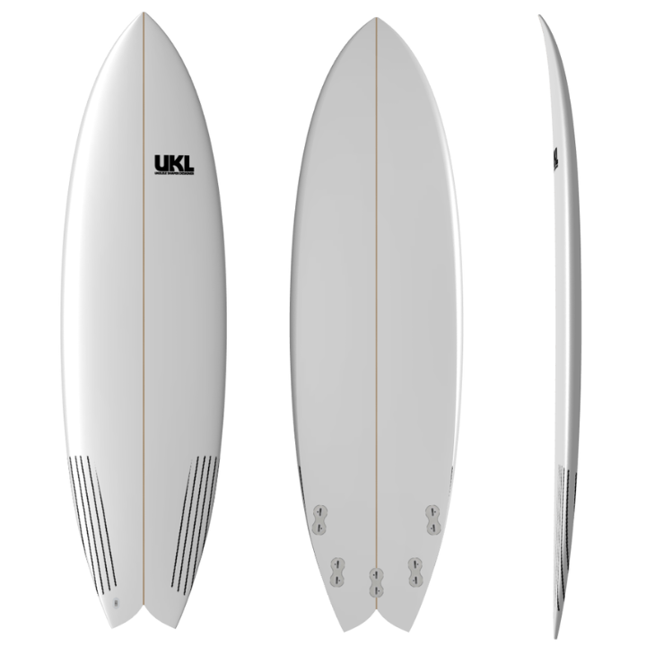

Portifólio Felipe Barcellos
- Como é minha rotina para ir surfar
- Falando mais sobre a rabeta da minha prancha
- Por que utilizo alguns links sobre surf?
Como é minha rotina para ir sufar
Crowd, ondas pequenas, águas vivas, trânsito caótico para chegar até a praia… são coisas que não fazem do verão a melhor estação para o surf. Mas, surfar no calor é tudo de bom.
Crowd, ondas pequenas, águas vivas, trânsito caótico para chegar até a praia… são coisas que não fazem do verão a melhor estação para o surf. Mas, surfar no calor é tudo de bom.
Veja mais sobre minha rotina
Crowd, ondas pequenas, águas vivas, trânsito caótico para chegar até a praia… são coisas que não fazem do verão a melhor estação para o surf. Mas, surfar no calor é tudo de bom.
‑Minha Prancha
Minha prancha tem o tamanho 5'10 e estilo de rabeta Fish. Eu uso 3 quilhas, mas tem espaço para colocar até 5 quilhas. A cor dela é verde, igual a do hulk (hehe). Não se apegando a todos detalhes e não menos importante quem fez ela foi um grande amigo e dono de um restaurante em Florianópolis chamado Puerto Escondido, um restaurante Mexicano.
Minha prancha tem o tamanho 5'10 e estilo de rabeta Fish. Eu uso 3 quilhas, mas tem espaço para colocar até 5 quilhas. A cor dela é verde, igual a do hulk (hehe). Não se apegando a todos detalhes e não menos importante quem fez ela foi um grande amigo e dono de um restaurante em Florianópolis chamado Puerto Escondido, um restaurante Mexicano.
Minha prancha tem o tamanho 5'10 e estilo de rabeta Fish. Eu uso 3 quilhas, mas tem espaço para colocar até 5 quilhas. A cor dela é verde, igual a do hulk (hehe). Não se apegando a todos detalhes e não menos importante quem fez ela foi um grande amigo e dono de um restaurante em Florianópolis chamado Puerto Escondido, um restaurante Mexicano.
Falando mais sobre a rabeta da minha prancha
Fish: entende-se por fish as pranchas que têm aquela rabeta swallow mais larga, geralmente mais curta e larga. Esse é um design muito famoso em algumas décadas atrás e que em meados de 2000 voltou com muita força. São rápidas, manobráveis e com excelente entrada de onda devido às suas características (bico mais largo, pouco rocker, bordas mais arredondadas).
Fish: entende-se por fish as pranchas que têm aquela rabeta swallow mais larga, geralmente mais curta e larga. Esse é um design muito famoso em algumas décadas atrás e que em meados de 2000 voltou com muita força. São rápidas, manobráveis e com excelente entrada de onda devido às suas características (bico mais largo, pouco rocker, bordas mais arredondadas).
Fish: entende-se por fish as pranchas que têm aquela rabeta swallow mais larga, geralmente mais curta e larga. Esse é um design muito famoso em algumas décadas atrás e que em meados de 2000 voltou com muita força. São rápidas, manobráveis e com excelente entrada de onda devido às suas características (bico mais largo, pouco rocker, bordas mais arredondadas).
‑Existem alguns outros tipos de rabetas
Longboard, Funboard, Mini Tank: O long e seu irmão menor funboard são os verdadeiros destruidores de crowd. Quem surfa de pranchinha já deve ter passado pela situação de estar aguardando aquela boa e, quando se dá por conta, já vem um longboarder remando lá de fora e entrando muito antes na onda. Um design que se popularizou nos últimos anos foi o mini tank, que é uma espécie de longboard com dimensões menores. Ótima opção para ondas menores e/ou mais fracas.
Longboard, Funboard, Mini Tank: O long e seu irmão menor funboard são os verdadeiros destruidores de crowd. Quem surfa de pranchinha já deve ter passado pela situação de estar aguardando aquela boa e, quando se dá por conta, já vem um longboarder remando lá de fora e entrando muito antes na onda. Um design que se popularizou nos últimos anos foi o mini tank, que é uma espécie de longboard com dimensões menores. Ótima opção para ondas menores e/ou mais fracas.
Híbridas: são designs mais amigáveis, geralmente com pouca curva de rocker, mais largas e volumosas. Essas pranchas ajudam muito o surfista a pegar mais ondas. Quem pega mais ondas, diverte-se mais.
Por que utilizo alguns links sobre surf?
Eu utilizo dois links de surf que me dão todo norte para qual praia irei surfar. A real utilização deles é para orientação das ondulações, vento e força do mar. Dessa forma não perco tempo indo em praias que possam não ter ondas!!
Eu utilizo dois links de surf que me dão todo norte para qual praia irei surfar. A real utilização deles é para orientação das ondulações, vento e força do mar. Dessa forma não perco tempo indo em praias que possam não ter ondas!!
Eu utilizo dois links de surf que me dão todo norte para qual praia irei surfar. A real utilização deles é para orientação das ondulações, vento e força do mar. Dessa forma não perco tempo indo em praias que possam não ter ondas!!